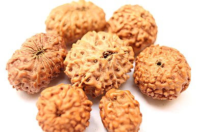

Plant Information - रुद्राक्ष
रुद्राक्ष (Elaeocarpus sphaericus)

- Botanical Name:Elaeocarpus Ganitrus Roxb.
- फॅमिली: Elaeocarpaceae
- Classical Name :Rudraksha (रुद्राक्ष)
- रस: मधुर
- वीर्य: शीत
- विपाक:मधुर
- गुण:गुरु, स्निग्ध
- दोषकर्म :वात व पित्त ला कमी करते.
- उपयोग:
- मानसिक तणाव शांत करणे आणि तणाव कमी करणे
- रुद्राक्षाचे फळ दगडावर घासून कांजण्यावरती लावल्याने आराम मिळतो.
- रक्तदाबामध्ये उपयोगी